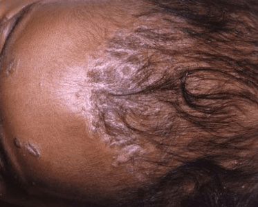
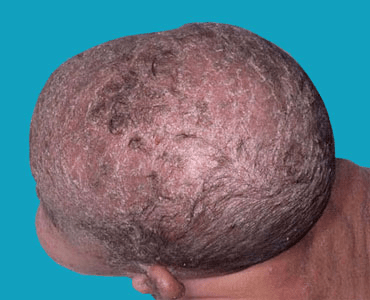

What is a Cradle Cap?
Cradle cap causes crusty or oily scaly patches on a baby's scalp. The condition
isn't painful or itchy. But it can cause thick white or yellow scales that aren't
easy to remove.
Cradle cap usually clears up on its own in a few months. Home-care measures include
washing your baby's scalp daily with a mild shampoo. This can help loosen and
remove the scales. Don't scratch cradle cap.
If cradle cap persists or seems severe, your doctor may suggest a medicated shampoo,
lotion or other treatment.

Any baby can develop cradle cap. It is not a contagious condition, nor does
it occur because of poor hygiene.

Common signs of cradle cap include:
- Patchy scaling or thick crusts on the scalp
- Oily or dry skin covered with flaky white or yellow scales
- Skin flakes
- Possibly mild redness
Similar scales may also be present on the ears, eyelids, nose and groin.
Cradle cap is common in newborns. It usually isn't itchy.
Cradle cap is the common term for infantile seborrheic dermatitis. It's sometimes
confused with another skin condition, infantile eczema. A major difference between
these conditions is that eczema usually causes significant itching.
You should see your child's doctor if the cradle cap does not improve with the self-care
measures described above. Be sure to call the doctor if the cradle cap looks red, oozes,
has excessive crusting, or if the baby has fever coupled with the previously described
symptoms.
The cause of cradle cap isn't known. One contributing factor may be hormones that
pass from the mother to the baby before birth. These hormones can cause too much
production of oil (sebum) in the oil glands and hair follicles.
Another factor may be a yeast (fungus) called malassezia (mal-uh-SEE-zhuh) that grows
in the sebum along with bacteria. Antifungal treatments, such as ketoconazole, are
often effective, supporting the idea that yeast is a contributing factor.
Cradle cap isn't contagious, and it's not caused by poor hygiene.
Cradle cap is easily treated; start by trying to gently remove some of the scale and
flakiness by giving the baby a warm bath with gentle baby shampoo. If this is not
sufficient, try loosening the scale before bath time by applying a bland oil, such
as mineral oil, massaging it in and carefully combing and shampooing it out at bath
time. Finally, you may try a shampoo designed for dandruff in adults, such as one
with salicylic acid or selenium sulfide, although you should discuss this with
your baby's doctor before attempting it if the baby is younger than 3 months.
Additionally, if you do try adult dandruff shampoo on the baby, be very careful
to not get any shampoo in his/her eyes.
Cradle cap usually doesn't require medical treatment. It clears up on its own within
a few months. In the meantime, wash your baby's hair once a day with mild baby shampoo
and brush the scalp lightly with a soft brush to loosen the scale.
If frequent shampooing doesn't help, consult your baby's doctor. He or she may recommend
an adult dandruff shampoo, such as one containing 2 percent antifungal ketoconazole
medication. Be sure the shampoo doesn't get in your baby's eyes, as it may cause
irritation. Hydrocortisone cream is sometimes helpful to reduce redness and inflammation.
Don't use over-the-counter cortisone or antifungal creams without talking to your baby's
doctor, because some of these products can be toxic when absorbed through a baby's skin.
Dandruff shampoos that contain salicylic acid aren't recommended for use in babies either,
because they can be absorbed through the skin.
The following over-the-counter treatments and home-care tips can help you control
and manage cradle cap.
- Gently rub your baby's scalp with your fingers or a washcloth to loosen the scales.
Don't scratch.
- Wash your baby's hair once a day with mild baby shampoo. Loosen the scales with a
small, soft-bristled brush before rinsing off the shampoo.
- If the scales don't loosen easily, rub petroleum jelly or a few drops of mineral
oil onto your baby's scalp. Let it soak into the scales for a few minutes, or hours if
needed. Then brush and shampoo your baby's hair as usual. If you leave the oil in your
baby's hair, the cradle cap may get worse.
- Once the scales are gone, wash your baby's hair every few days with a mild shampoo
to prevent scale buildup.